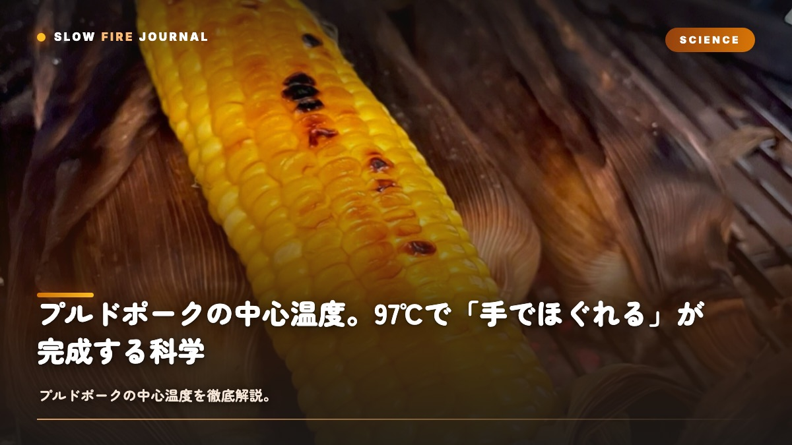

プルドポークの中心温度。97℃で「手でほぐれる」が完成する科学
10時間も焼いたのに、ほぐそうとしたら筋が残って硬いまま——プルドポークでそんな経験、ありませんか？じつは完成のカギは、中心温度97℃にあるんです。92℃ではまだ硬く、100℃を超えると今度はパサついてしまう。たった5℃の差が「ほぐれる」と「筋が残る」を分けてしまうんですよね。ここでは、0℃から97℃に至る温度カーブと、途中で必ず現れる「ステール」の正体、そして失敗パターン3つまでを、コラーゲンのゼラチン化から一緒にひもといていきます。

なぜ温度がプルドポークのすべてを決めるのか
プルドポークは、グリル温度でも焼き時間でもなく、中心温度で完成が決まる料理なんです。同じ豚肩ロースでも、個体ごとに脂・筋繊維・骨の位置が違っていて、110℃で焼いても8時間で97℃に届く個体もあれば、11時間かかる個体もあります。時間は目安、温度は答えなんですよね。
完成形は「コラーゲンが完全にゼラチン化した状態」と、物理的にきちんと定義されています。コラーゲンは結合組織のたんぱく質で、加熱されると三本鎖がほどけて、水分と結びついてゼラチンに変わります。「ほぐれる」かどうかの一線は、温度で決まるんです。
温度カーブ — 0℃→65℃→ステール→92℃→97℃
2〜3kgの豚肩ロースを110℃で焼くと、中心温度は次の曲線を描きます。直線的には上がらず、必ず途中で止まるのが特徴です。
| 段階 | 中心温度 | 時間 | 肉の中で起きていること |
|---|---|---|---|
| 1. 加熱開始 | 0〜10 → 40℃ | 1〜1.5h | 筋繊維たんぱく質は無傷。ラブが溶けて密着 |
| 2. たんぱく質変性 | 40 → 60℃ | 1.5〜2h | ミオシン・アクチン変性、肉汁が押し出される |
| 3. コラーゲン初期変性 | 60 → 65℃ | 0.5〜1h | コラーゲン収縮開始、水分が大量蒸発 |
| 4. ステール | 65 → 75℃で停滞 | 2〜4h | 気化熱で冷却、グリル熱量と釣り合う |
| 5. ステール脱出 | 75 → 85℃ | 1〜1.5h | 蒸発が落ち着き、再び上昇 |
| 6. 本格ゼラチン化 | 85 → 92℃ | 1〜1.5h | 結合組織が水分と結合、柔らかくなる |
| 7. 完成域 | 92 → 97℃ | 0.5〜1h | 筋繊維がほどける状態へ |
注目してほしいのは 4の停滞ゾーンです。初心者の多くがここで「グリルが壊れたのかな」と疑ってしまいますが、これは物理現象なんですよね。くわしくは、次の節でお話しします。
ステール（プラトー）の正体と乗り越え方
これは、ステール（Stall）あるいはプラトー（Plateau）と呼ばれる現象です。中心温度が65〜75℃の範囲で2〜4時間止まって、ときには下がることすらあります。正体は、肉表面からの水分蒸発による気化熱なんです。
水が蒸発するとき、1gあたり約540calの熱を奪います。打ち水で涼しくなったり、汗をかいて体温が下がったりするのと同じ原理ですね。表面温度が60〜70℃に達すると、内部の水分が表面へ移動して蒸発し、その気化熱で肉が冷やされます。グリルの熱量と蒸発による冷却が釣り合った瞬間に、温度は停滞するんです。
ステールが教えてくれる「肉の働き」
ステール中、肉はサウナで汗をかいているような状態なんです。表面が湿って、煙が吸着して、香りの層（バーク）が育つ条件でもあります。焦らず、止まったままそこにいるのが、SLOW FIREの作法です。
ステールを乗り越える3つの方法
- テキサスクラッチ：アルミホイルで包んで、蒸発を物理的に遮断します。最速・最確実ですが、バークは犠牲になります
- ピンクペーパー：通気性を残しつつ蒸発を抑える折衷案です。バークも残せます
- パワー・スルー：そのまま2〜4時間耐えます。バークが最も深くなりますが、時間は読みにくいです
家庭でいちばん現実的な選択は、テキサスクラッチかなと思います。週末の予定が読めるようになりますよ。
92℃ vs 97℃ — 5℃の差が完成度を分ける
「コラーゲンは92℃でゼラチン化する」——これ自体は正しいんです。ただ、「始まる」と「完了する」は、まったく違うんですよね。
| 中心温度 | 結合組織 | 食感 | 適した料理 |
|---|---|---|---|
| 85℃ | ゼラチン化前 | 箸が刺さるがほぐれない | スライス豚肩ロースト |
| 88℃ | 部分ゼラチン化 | ナイフで切れるが繊維残る | 厚切りスライス |
| 92℃ | 主要が変性 | 箸でほぐれるが硬い箇所あり | 骨付きスライス・煮込み |
| 97℃ | 完全変性 | フォークでほぐれる | プルドポーク |
| 100℃〜 | 水分過剰流出 | ほぐれるがパサつく | 非推奨 |
92℃と97℃を並べてプルしてみると、違いは衝撃的なんです。92℃では繊維が「ブチっ」と切れる感覚が残ります。97℃では「すーっ」と離れていきます。この5℃が、プルドポークと「おいしい煮豚」の境界線なんですよね。
テキサスクラッチの使いどころ
テキサスクラッチ（Texas Crutch）は、ブリスケット文化圏で生まれた「ステールでホイルに包む」技法です。プルドポークでも、同じように有効なんですよね。
包むタイミングの判断軸
- 中心温度73〜75℃に到達したら準備します
- 表面のバークが濃い茶色〜マホガニー色になっていれば合図です
- 包む前にアップルジュースかビールを大さじ2〜3振りかけます
- アルミホイルで二重に包んで、ピットに戻します
包んだあとは、グリル温度を120℃へ5〜10℃上げるのがコツです。ホイルの内側へ熱が遅れて伝わるので、外側の熱量を少し増やしてバランスを取ってあげます。
| 包み材 | バーク | 時間短縮 | 仕上がり |
|---|---|---|---|
| アルミホイル | △ 柔らかく | ◎ 1〜2時間短縮 | ジューシー、バーク薄め |
| ピンクペーパー | ◯ 残る | ◯ 30分〜1時間短縮 | バランス型 |
| 包まない | ◎ 最深 | × +2〜3時間 | コンペスタイル |
レスト — 完成温度に達してから45分の意味
97℃に到達した瞬間にほぐしてはいけません。最低30分、できれば45〜60分のレストが必要です。レスト中の肉では3つのことが起きています。
- 温度の均一化：中心97℃と表面105℃の差が縮まって、全体が95℃前後で揃います
- 肉汁の再分配：押し出された肉汁が、ゼラチン化した結合組織の網目に再吸収されます
- キャリーオーバー：余熱で中心温度がさらに1〜2℃上昇して、最終変性が完了します
クーラーボックスレストの推奨
ホイルで包んだまま、空のクーラーボックスへバスタオルと一緒に入れる「フォルティングボックス」が業界の定番です。中心60℃以上なら2〜3時間レストしても大丈夫なんですよ。提供時間の調整にも使える「保温の保険」になってくれます。
失敗パターン3つと対策
失敗1：90℃前後で取り出してしまう
「もう焼けたはず」と90℃で取り出してしまうと、繊維が硬いまま「ほぐれず割れる」状態になってしまいます。対策は、プローブを刺しっぱなしにして、97℃を待つこと。表面が黒くなっても、中はまだなんですよね。色ではなく、温度で判断してください。
失敗2：時間で判断して焼きすぎる
「10時間焼けば完成」と時間で判断して、すでに95℃に達した肉をさらに2時間焼いてしまうと、100℃を超えてパサついてしまいます。8時間で97℃に達したら、その時点が完成です。対策は、時間ではなく温度で見ること。プローブの刺さる感触も判断軸にしてください。
失敗3：レストせずに切ってしまう
97℃の直後にプルすると、肉汁が流出して皿が水浸しになりますし、表面が高温で火傷の危険もあります。対策は、必ず45分以上レストすること。クーラーボックスに入れれば、1〜2時間置いてもまだ熱々で食べられますよ。
温度を眺めるという、料理のかたち
プルドポークの10時間のうち、実際に手を動かすのは、1時間あるかどうかなんですよね。残りの9時間は温度を眺める時間です。65℃で止まる肉、75℃で動き出す肉、92℃を越えて加速する肉。目に見えない化学変化を、温度計の数字を通じて感じ取る——これがロー&スローの面白さなんです。
「煮る」「焼く」とはまた別の、「温度を運ぶ」という第三の動詞があるのかなと、個人的には思っています。温度カーブを理解した瞬間、グリルの前の時間は、ただの待ち時間ではなく立ち合いの時間に変わります。
CONCLUSION
結論
プルドポークの完成温度は、中心97℃です。65℃→ステール→92℃→97℃のカーブを理解して、ステールを乗り越えて、レストを十分に取ってあげれば、フォークでほぐれる王様の食感に到達します。温度計が1本あれば、失敗の9割は防げますよ。
10時間の作り方、ロー&スローの哲学、ブリスケットの12時間と合わせて読むと、ロー&スロー全体の温度設計が見えてきます。テキサスBBQのクラッチ文化、BBQ用語辞典 もぜひ参考にしてみてください。
FAQ
プルドポークの温度についてよくある質問
プルドポークの中心温度は何℃が正解ですか？
完成の中心温度は97℃です。豚肩ロースのコラーゲンが92℃でゼラチン化を始め、97℃で完全に変性しきって筋繊維が手でほぐれる状態になります。92℃で取り出すと「まだ硬い」、100℃を超えるとパサつくため、97℃前後の数℃が完成域です。
ステール（プラトー）はなぜ起きるのですか？
中心温度が65〜75℃で長時間止まる現象がステール（プラトー）です。肉の表面から水分が蒸発するときの気化熱で肉が冷却され、グリルから入る熱量と釣り合うために停滞します。失敗ではなく正常な物理現象で、アルミホイルで包む「テキサスクラッチ」で蒸発を遮断すれば乗り越えられます。
プルドポークは何時間焼けば完成しますか？
2〜3kgの豚肩ロースを110℃で焼く場合、目安は8〜10時間です。1kgあたり約3〜4時間が国際的な目安ですが、個体差・グリルの安定性・外気温で前後します。時間ではなく中心温度97℃で判断するのが原則です。
プルドポークの失敗パターンは？
代表的な失敗は3つ。①90℃前後で取り出して「まだ硬い」、②110℃を超えて焼き続けてパサつかせる、③レストを取らず切ってしまって肉汁が流出する。いずれも中心温度を計測せず、見た目や時間だけで判断したときに起こります。
97℃に達したらすぐ食べていいですか？
いいえ、最低30分、できれば45〜60分のレストを取ってください。レスト中に内部温度が均一化し、ゼラチン化した結合組織の周りで肉汁が再分配されます。アルミホイルに包んだままクーラーボックスに入れて休ませると、肉汁の保持率が大幅に高まります。
PERFECT WITH
プルドポーク・温度勝負に向いた豚系ラブ
10時間の温度カーブに耐え、97℃で深い香りを残す豚専用ラブ